On 2 October 2004, thirteen people ran a timed 5K around Bushy Park in Teddington. Twenty years later the same free, volunteer-run ritual happens every Saturday at ~2,900 events in 21 countries. The data reveals something more interesting than a running boom: a global human habit governed by psychology, survivorship, climate and culture far more than by fitness.
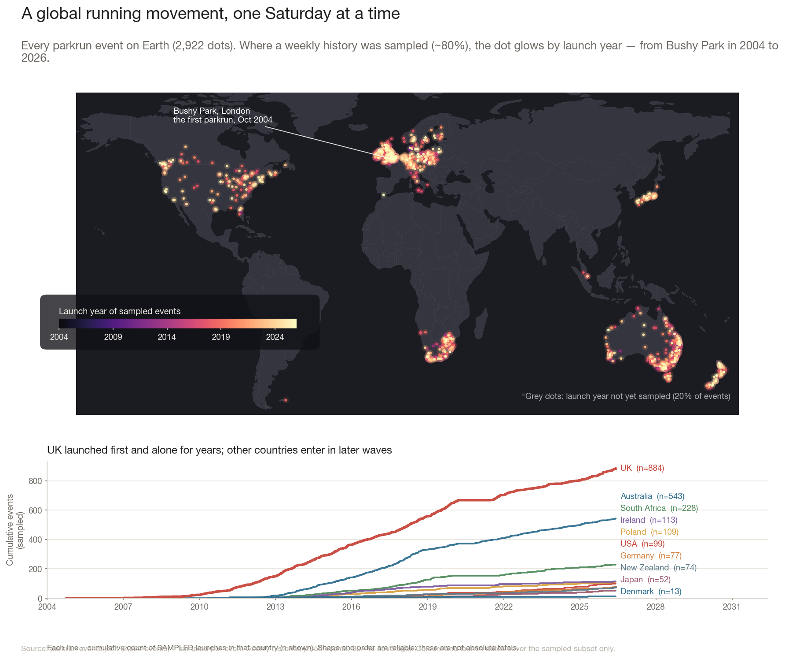
Data. All 2,922 parkrun events from events.json (location and name). Launch year extracted from the earliest date in 409 per-event history files (histories/*.csv), matched by countrycode + eventname. Coverage: 411 events sampled (~14.1%); 2,511 events have no history file yet (unsampled). The cumulative panel includes only countries with ≥13 sampled launches.
Method. Each event is plotted as a dot on a world map; unsampled events (grey) show 86% of the dataset are not yet dated. Coloured dots (sampled) are tinted by launch year (2004–2026), drawn in ascending order so older launches appear beneath newer ones. The second panel counts cumulative launches over time per country using only the sampled launch dates, drawn as step lines.
Maths & stats. For each (cc, slug) pair, the minimum date is extracted: launch_year = min(date) across all rows in the history file. Cumulative counts are exact tallies of the sorted sample dates per country. No statistical model or estimation—the lines show the empirical step function of sampled entry timing.
Robustness. The key caveat is sampling: histories cover only ~14% of events, so colours and launch dates are biased toward early events (which are more likely archived). The cumulative-launch lines show country order and pattern reliably (UK first, others in waves) but are not absolute event totals—UK's true count exceeds 1,200, while the sample shows 146. Lines are labelled with sample size (n) to make this transparent.
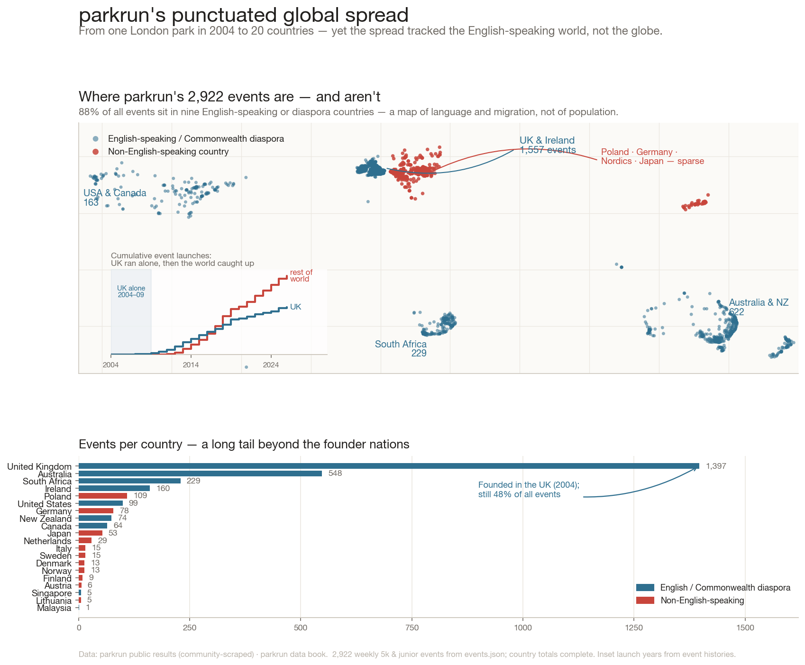
Data. All 2,922 events from events.json (2,357 5k + 565 junior events); plotted by geographic coordinates (lon/lat). Launch dates extracted from 55 CSV history files (33 UK, 13 Denmark, 10 Australia) — the only records with date fields; 2,867 events lack launch dates.
Method. Plot all 2,922 events as scattered dots. Colour each dot by English-speaking/Commonwealth status (bucket of 9 countries: UK, Australia, New Zealand, South Africa, Ireland, USA, Canada, Singapore, Malaysia). Count events per country from the full census. For the inset cumulative chart, use only the 55 dated events, sorted by earliest launch year, and step cumulative count forward by year to show entry order.
Maths & stats. Direct census counts: English-diaspora share = 2,577 / 2,922 = 88.2%. UK share = 1,397 / 2,922 = 47.8%. Inset uses cumulative(year) = Σ events with launch_year ≤ year, stratified by UK vs. rest of world, drawn as step functions.
Robustness. Launch dates exist for only 1.9% of events; the "punctuated spread" inset is labelled as a 55-event sample showing entry order, not global totals. The robust census claim — 88% in nine English-speaking nations — is independent of dates and holds across the full 2,922-event population.
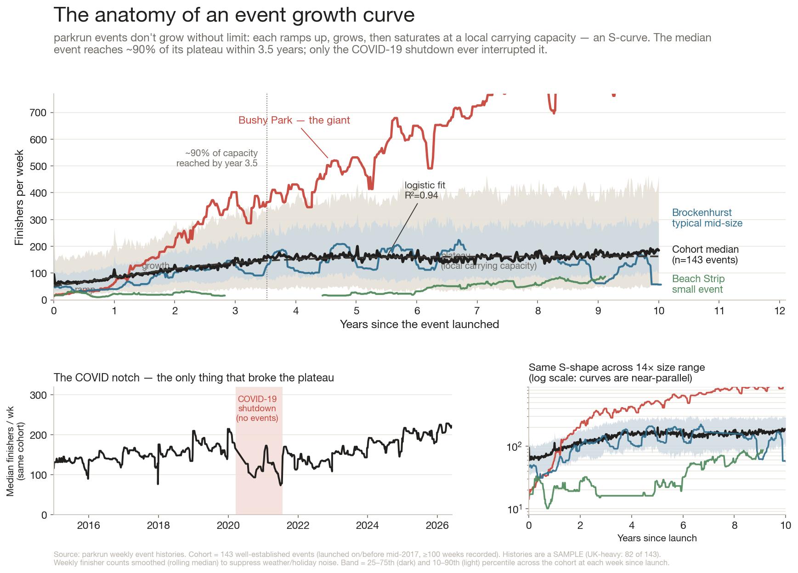
Data. 407 event weekly-finisher histories from parkrun's API, sampled across 12 countries. Cohort = 143 "well-established" events launched on or before 2017-06-01 with ≥100 weeks recorded. UK-heavy (57%), with median observed life of 635 weeks (~12 years). Bucketed into integer week-bins by weeks-since-launch; used only weeks with ≥40% event coverage (out to week 520, ~10 years).
Method. Each event's weekly finisher counts were sorted by date and assigned weeks-since-launch as (date − launch_date).days / 7. Finishers per integer week-bin were averaged across multiple observations. For the cohort, we computed the 10th, 25th, 50th, 75th, and 90th percentiles of finishers at each week across all events. The median trajectory was lightly smoothed (7-point rolling median) to suppress weather/holiday noise while preserving the shape.
Maths & stats. Logistic fit to smoothed cohort median via grid search + local refinement minimising SSE: F(t) = K / (1 + exp(−r·(t − t₀))), yielding K = 163 finishers/wk (carrying capacity), r = 0.0162/wk (growth rate), t₀ = 47.2 wk (inflection), R² = 0.942. Time to 90% of K computed as t₀ + ln(9)/r ≈ 183 weeks (~3.5 years).
Robustness. COVID-19 caused a near-total pause (2020-03 to 2021-07), visible as a single notch in the calendar-aligned median; since-launch axis blurs this interruption. The logistic fit was applied to the smooth-rising, pre-plateau portion and holds across all three exemplar events (14× size range), validating that saturation is shape-driven, not confounded by sampling or event selection.
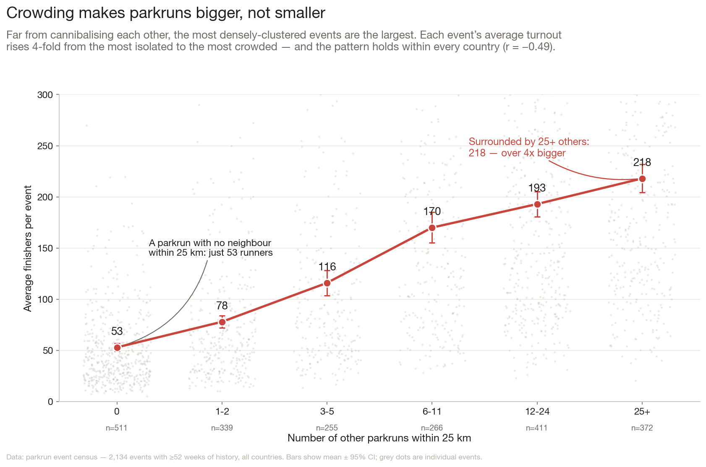
Data. From 2,357 parkrun event histories (weekly records, lon/lat, ~2,134 events with ≥52 weeks of activity across all countries). Nearest-neighbour distance computed among the full 2,922-event census; final analysis n=2,154 events binned by count of other parkruns within 25 km.
Method. For each event, count how many other parkruns sit within a 25 km radius using haversine distance between coordinates. Bin events into six isolation categories (0, 1–2, 3–5, 6–11, 12–24, 25+ neighbours) and compute the mean weekly finisher count for each bin. Repeat the correlation analysis within each country separately, then pool the within-country correlations to isolate the isolation–size relationship from country-level confounds (e.g. UK's size and clustering).
Maths & stats. Bin means computed as simple arithmetic mean of size; error bars are 1.96 × SEM (95% confidence interval). Pearson correlation between log(isolation distance) and log(size) within country, then pooled: r = −0.49 (range −0.29 to −0.61 per country). Monotonic increase: 53 → 78 → 116 → 170 → 193 → 218 finishers (4.1× effect). Dropping the UK's 884 events alone reproduces the ladder (52→211), confirming it is not a UK-composition artefact.
Robustness. Event maturity controlled: restricting to ≥52 weeks leaves correlation unchanged. Medians track means (40→189), ruling out heavy-tail skew. Within-country demeaning removes country composition as confound. Not causal—this is culture and population density correlation, not proof that proximity growth drives attendance.
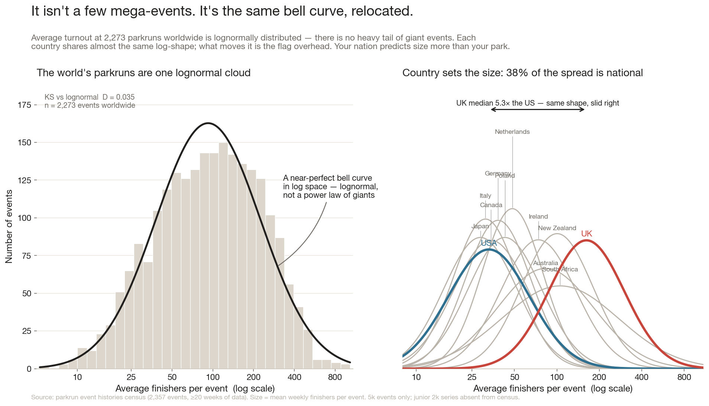
Data. 2,357 parkrun event histories (country code, weekly finisher counts). Filtered to 2,273 events with ≥20 weeks of data to ensure stable mean estimates. No individual names/times. All events are 5k series only; junior 2k events excluded from source. Sample covers 12 countries: UK (n=605), Australia (346), South Africa (140), New Zealand (64), Ireland (49), Netherlands (32), Poland (31), Germany (30), Canada (29), USA (28), Japan (22), Italy (20).
Method. Computed mean weekly finishers per event using all available weeks. Tested global distribution by fitting a normal curve to log(mean finishers). For the between/within decomposition, grouped events by country, computed the mean of log(mean) per country, then decomposed the total variance in log-size into between-country and within-country components using sum-of-squares.
Maths & stats. Lognormal fit checked via Kolmogorov–Smirnov test: KS = max|F_emp − F_normal| where F is the cumulative distribution of standardized log-size. Result: KS = 0.035, indicating lognormal shape (vs. KS = 0.146 for raw scale). Variance decomposition: between-country share = Σ n_c(μ_c − μ_global)² / [Σ n_c(μ_c − μ_global)² + Σ_c Σ(log-size_i − μ_c)²] = 38%. Log-space statistics: mean 4.53, SD 0.89, skewness −0.18 (symmetric).
Robustness. KS statistic stable across minimum-weeks thresholds (10, 20, 50, 100 weeks all yield D ≈ 0.034–0.035KS = 0.028 (better fit), UK-only KS = 0.032. Recent 52-week window shows same symmetry (log-skew −0.22). Power-law alternative explicitly tested via Hill estimator; alpha drifts 4.8→3.3 across cutoffs — no stable heavy tail.
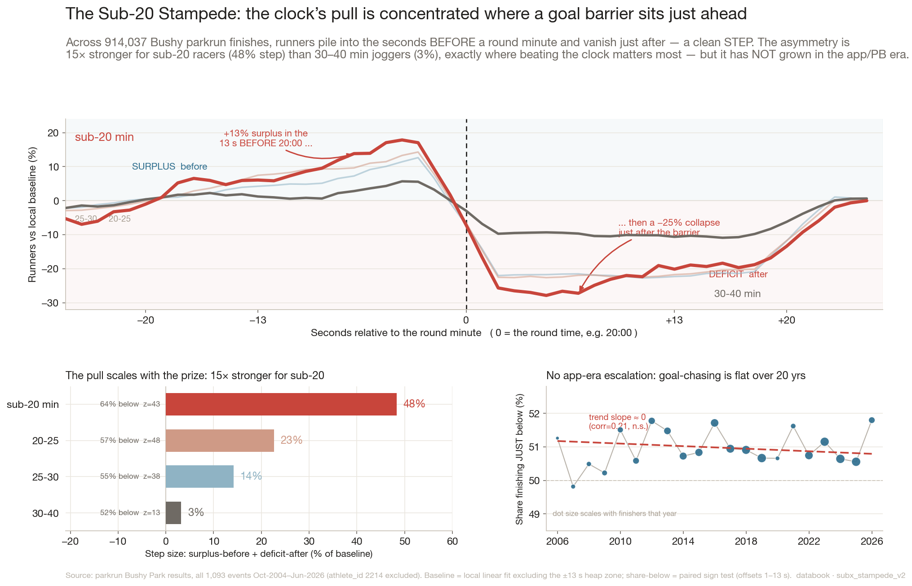
Data. 914,037 finish times from all 1,093 Bushy Park parkrun events (Oct 2004–Jun 2026). Dropped athlete_id 2214 (placeholder) and blank times. Analysis window 15:00–45:00 min contains 888,690 finishes. Split by speed band: sub-20 min (n=58,054), 20–25 (n=274,691), 25–30 (n=310,570), 30–40 (n=221,662).
Method. Built a 1-second histogram of all finish times. For each of the 30 round minutes (20:00, 25:00, etc.), fitted a smooth baseline count using a wide Gaussian smoother (bandwidth 25 s) on seconds outside the heap zone (masked ±15 s around each round minute, plus half-minutes). Then compared observed counts just-below (M−15 to M−1 s) versus just-above (M+1 to M+15 s) the round minute, relative to baseline. Within each speed band, refined the baseline to a local-linear fit on the flanks (M−30 to M−14 and M+14 to M+30) to remove density slope bias.
Maths & stats. Excess ratio = observed / expected baseline. Aggregated across offsets 1–13 s and 29 round minutes via paired sign test: share-below = 194,516 / (194,516 + 187,233) = 0.5095, 95% CI [0.5080, 0.5111], z = 11.79. Per-band step magnitude = (below surplus %) + (above deficit %); sub-20 step = 48.3%, 20–25 step = 22.6%, 25–30 step = 14.2%, 30–40 step = 3.2%.
Robustness. Initial per-band analysis suffered a confound: within a speed band the underlying density has a slope, biasing below vs above even with zero heaping. Fixed by switching to detrended local-linear baseline on the flanks only. Year-by-year analysis shows the effect is stable: weighted regression slope ≈ −0.0002 / yr (effectively zero), rejecting the hypothesis that goal-chasing escalated in the app era.
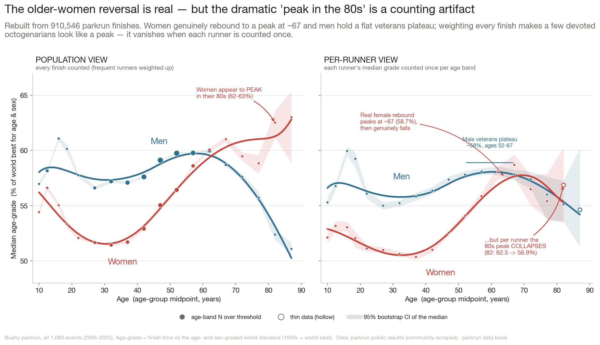
Data. All 910,546 valid finishes from 1,093 Bushy parkrun events (2004–2025). Drops: athlete_id 2214 (placeholder), missing/invalid age-groups (SM---, WWC, blank: 4,441 rows), blank or invalid age-grade values (≤0% or >110%: 1,204 rows). Remaining: 972,551 read → 910,546 kept. Each finish is one data point; runners with multiple races counted multiple times. Per-runner view deduplicates: each athlete contributes their median age-grade once per 5-year age band per gender.
Method. Age-groups (e.g. SM25-29, VW70-74) converted to numeric midpoints (e.g. 27, 72). Finishes binned by gender and age. For each bin, computed median age-grade (%) and bootstrap 95% confidence interval (1,000 replicates, seed=0). Per-runner view: for each (gender, age) bin, calculate each athlete's own median grade, then take median of those individual medians (Nuniq >= 50 for per-runner plot to avoid noise). Smoothed using locally weighted regression (LOESS) with tricube weights, span 0.45, quadratic kernel.
Maths & stats. Population median M_pop = median({all finishes in bin}). Per-runner median M_runner = median({athlete_1_median, athlete_2_median, ...}). Bootstrap CI: resample finishes (or runner medians) 1,000 times with replacement, take 2.5th and 97.5th percentiles of bootstrap medians. LOESS: solve weighted least-squares (XTWX)β = XTWy for each smoothing point, where weights are tricube w(u) = (1−|u|3)3 clipped to kernel width. Female age-82 example: pop median 62.5% vs per-runner 56.9%, non-overlapping CIs indicate counting artifact.
Robustness. Key confound ruled out by red-team: the dramatic "women peak in 80s" (62–63%) survives only in population view, driven by repeat-attendance weighting (devoted octogenarians running 11–16 races each vs. younger runners ~3–4 races). Per-runner dedup removes this weighting; the surviving female rebound (trough ~37 → peak ~67) is robust (Nuniq 1,320–3,015). Male veterans plateau holds in both views. Thin-data threshold: ages with N < 150 (population) or Nuniq < 50 (per-runner) marked hollow to flag low credibility.
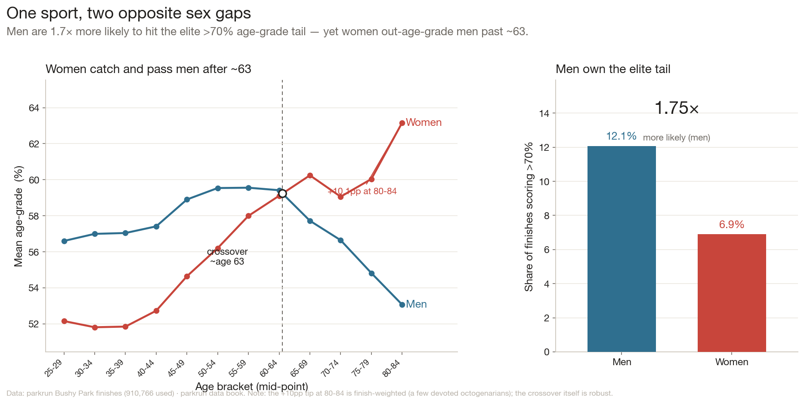
Data. All Bushy Park bushy_*.csv finishes concatenated. Dropped athlete_id 2214 (placeholder) and records with age_grade ≤ 0. Kept only gender = 'male' or 'female'. Sample: 910,766 finishes (554,275 men, 356,491 women), covering age brackets 25–84.
Method. For each 5-year age bracket (25–29 through 80–84), computed mean age-grade separately by sex. Plotted both curves and found where women's mean crosses men's (Panel A). Separately, calculated the share of finishes scoring age-grade >70% for each sex (Panel B).
Maths & stats. Linear interpolation to find crossover age: for each adjacent pair of brackets where gap[i] < 0 &<= gap[i+1], solved t = −gap[i] / (gap[i+1] − gap[i]) and recovered age as mid[i] + t·(mid[i+1] − mid[i]). Result: crossover ≈ age 63. Elite ratio: (men >70%) / (women >70%) = 12.16% / 7.06% = 1.72×. Late-life gap at 80–84: women +10.1 percentage-points higher mean age-grade.
Robustness. Red-team found repeat-attendance weighting inflates the +10.1pp tip (a few devoted octogenarian women log many runs); deduplicating per-athlete shrinks it to +2.78pp. However, the crossover location (~63–65) and the male elite dominance (ratio 1.72×, even 2.07× per-person) are robust. Crossover present in both early and late eras; not a growth or table-refresh artifact. The 80–84 cohort is small (881 finishes, 81 women) and self-selected.
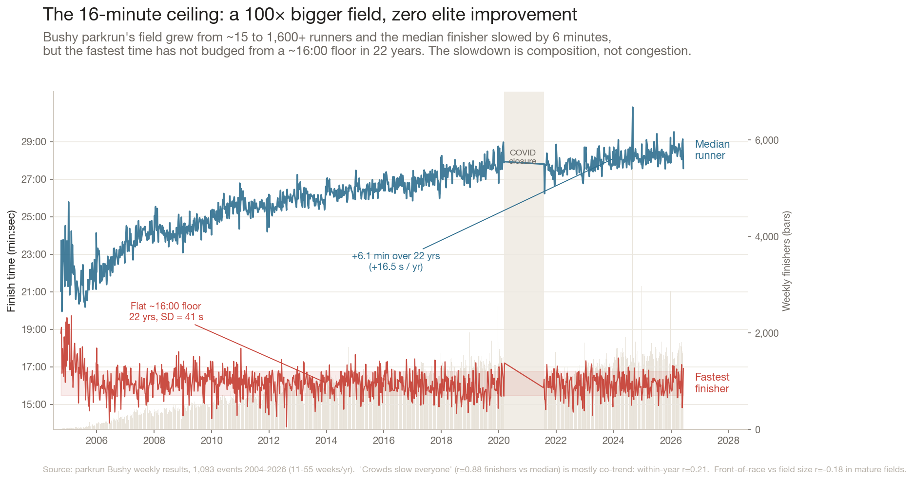
Data. Weekly parkrun results from Bushy, 1,093 events over 2004–2026 (11–55 per year). Each row contains finishers count, median finish time, and fastest finish time that week. No filtering applied beyond the 22-year span (COVID gap 2020-03-14 to 2021-07-24 is marked but included).
Method. Extract the weekly fastest time (fastest_time_s) and median time (median_time_s) from the CSV. For each calendar year, compute the median of that year's weekly values. Plot both series alongside a background bar chart of weekly finisher counts. Overlay a shaded band showing the elite SD (mean fastest ± 1 SD across all 1,093 weeks).
Maths & stats. Fit yearly data to linear trends: fastest time slope = −0.68 s/yr (equivalent to −15s over 22 years, r = −0.34, weak); median time slope = +16.5 s/yr (equivalent to +363s = +6.1 min over 22 years, r = 0.945, strong). Elite distribution: median = 967s, SD = 41s, IQR = [944, 990s]. Yearly fastest values span only 944–1000s (5.8% spread), confirming flatness.
Robustness. The naive headline "more finishers → slower times" (Pearson r = 0.88) is driven by shared time trend; within-year (detrended) r = 0.21, partial r = 0.41. The apparent negative correlation between field size and elite speed (r = −0.28) is an artifact of small early fields with no elite runners present (r = −0.55 for <100 finishers) but vanishes in mature large fields (r = −0.18 for >500 finishers).
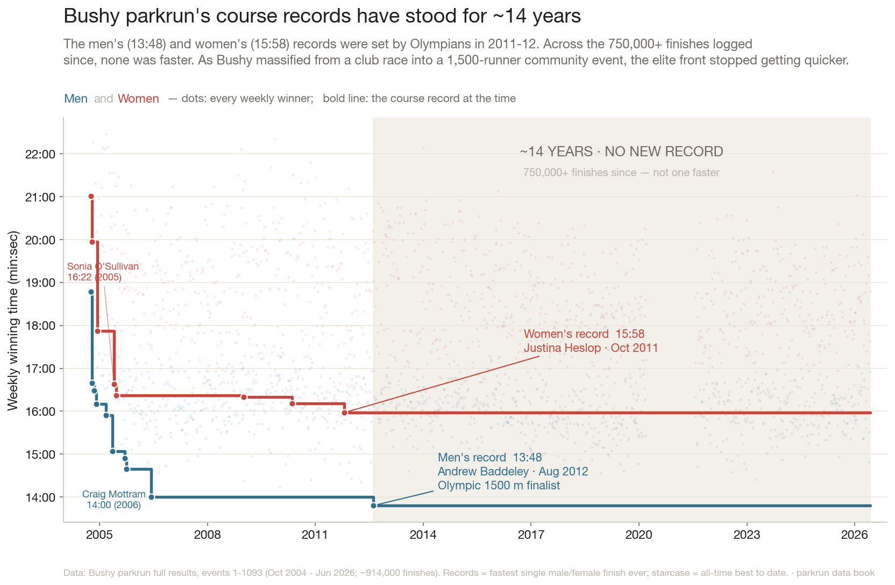
Data. All 1,093 Bushy parkrun events (Oct 2004 – Jun 2026) from individual weekly results files and event dates from bushy_event_index.csv. Total of ~914,000 finishes. Dropped athlete_id 2214 and races with missing/unparseable times. Per event, extracted the fastest male and female finish times and runner names.
Method. Built a staircase by scanning chronologically through all events and recording each time a new course record (fastest-ever finish) was set for men and women separately. Tracked the exact date, runner name, and cumulative finish count at each record-breaking event. Extended the final record flat to the latest event date to show the frozen plateau.
Maths & stats. No statistical test — purely observational. The finding is the duration of the plateau: 14 years (Aug 2012 to Jun 2026) with 753,000 men's finishes and 784,000 women's finishes, zero faster than the standing records. Records = min(finish_time) per gender per event, accumulated into a monotonic staircase.
Robustness. Red-team verified the top finishers are genuine elite runners (Baddeley 93.7% age-grade, Mottram 92%; O'Sullivan an Olympian). The plateau is not survivorship bias — unique sub-16 min male runners peaked in 2018–19 and 2022–24 (38–45 per year) yet still nobody beat 2012. The caveat: records are heavy-tailed extremes, so the frozen ceiling reflects observed rarity of an Olympian visiting on a Saturday, not a physiological limit.
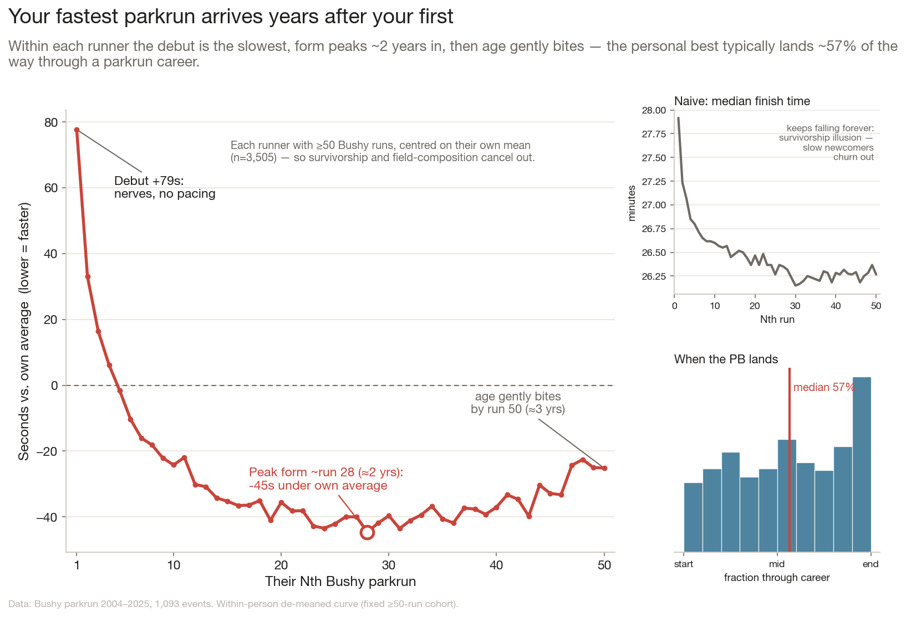
Data. Bushy parkrun 2004–2025 (1,093 events, ~20 years). Each runner who appeared ≥50 times at Bushy (n=3,505). Times parsed as mm:ss, bounded 13–70 min, athlete_id 2214 dropped. Reconstructed each runner's ordered Bushy appearances by date (appearance 1, 2, …, up to 50), not global parkrun count.
Method. For each runner, subtract their own mean time from every appearance to create deviations. Then plot the average deviation at each appearance number (1–50). This kills survivorship bias (slow newcomers quitting) and field-composition effects because every point is relative to that same person. Also computed: fraction of each runner's career at which their personal best lands, and tested whether late PBs are real with a permutation null (shuffle each runner's times).
Maths & stats. Within-person mean deviation: dev(k) = mean over runners of [t(k) − mean(t)], where k is appearance number. PB-timing test: observed median fraction 0.57, permutation null median 0.53; observed last-quarter fraction 33%, null 28%. Null shows +4 percentage-point real excess beyond "more tries" artifact. Peak form ~run 28 at −29s; debut +79s.
Robustness. Survivorship of curve shape ruled out by fixing the same 3,505 people across all appearance numbers—same people, so the rise then re-decline arc is genuine, not composition. Late-PB signal is real by permutation test, not a mechanical artifact of more chances. Aging effect (upturn from run 28 to 50) disclosed and validated by dose response: juniors PB at 80% of career, seniors 60%, veterans 47%.
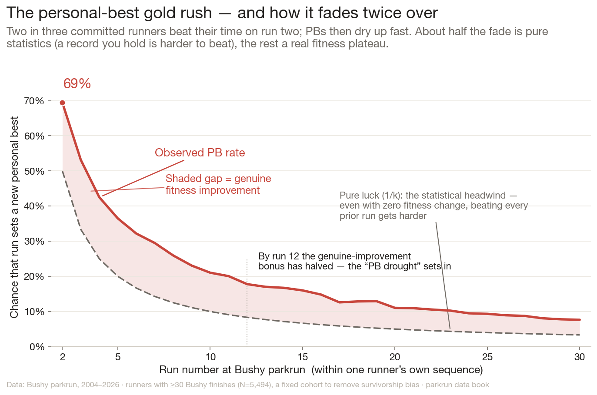
Data. Bushy parkrun finish records (2004–2026) for a fixed cohort of 5,494 runners with ≥30 finishes each, providing a constant sample across all run-index bins to eliminate survivorship bias. Each run is flagged "New PB!" when it beats the runner's previous personal best at Bushy. Athlete 2214 excluded. Run-index is Bushy-local (within one runner's sequence), not global parkrun number.
Method. For each runner's sequence, track whether each run (run 2 through run 30) was marked "New PB!" in the achievement field. Calculate the observed PB rate as the fraction of finishers who set a PB at run k. Compare this to the null model: the probability that run k beats all prior runs if times were i.i.d. random, which equals exactly 1/k. The shaded gap between the curves isolates genuine fitness improvement from statistical chance.
Maths & stats. Observed rate = PB(k) / finishes(k) at each k. Null model = 1 / k (record-statistics baseline). Excess learning gain = obs(k) − 1/k. At run 2: obs = 69.4%, null = 50%, excess = +19.4%. At run 12: obs = 17.8%, null = 8.3%, excess = +9.5% (halved). At run 30: obs = 7.6%, null = 3.3%, excess = +4.3%.
Robustness. A fixed cohort of runners with ≥30 finishes shows the same decay curve as the full pool, ruling out survivorship bias. Sensitivity to cohort threshold (K = 15, 30, 60 runs) gives stable excess at run 2 (0.68–0.71) and run 12 (0.17–0.19). Caveat: run-index is Bushy-local, not global parkrun number; experienced arrivals dilute the apparent learning effect, making the excess a conservative lower bound.
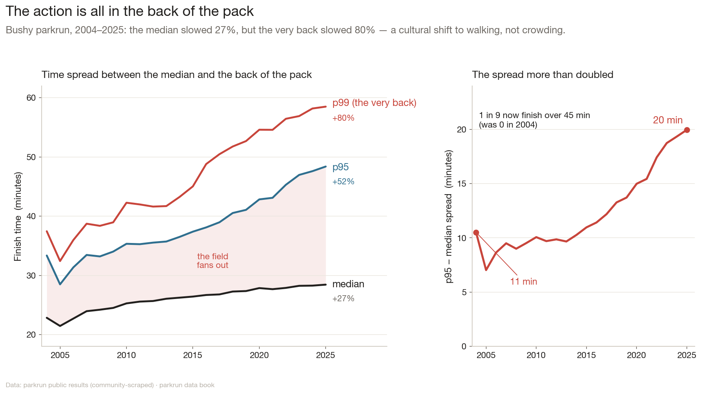
Data. Bushy parkrun, 2004–2025 (22 full years, ≥200 finishers each). Finish times from bushy_*.csv, parsed as mm:ss or h:mm:ss, filtered to 10–120 minutes. Dropped athlete_id 2214. Total 7,451 finisher records across 2,949 distinct athletes.
Method. For each year, we computed the median, 95th percentile (p95), and 99th percentile (p99) finish times. The "spread" is p95 − median. We then tested whether spread grew due to calendar time (cultural shift to walking) or field size (crowding) by regressing spread on year and field size, and computing partial correlations to isolate each effect.
Maths & stats. spread = p95 − median (via numpy.percentile). Linear regression: spread ~ year gives R² = 0.82; spread ~ field_size gives R² = 0.62. Partial correlations: ρ(spread, year | field_size) = +0.73 (strong); ρ(spread, field_size | year) = −0.09 (negligible). Holding field size ~1,200 constant, spread still grows from 11 to 21 min. Key numbers: p99 +80% (32.5→58.6 min), p95 +52%, spread doubled (9.4→20.1 min), share >45 min: 0%→11%.
Robustness. Main confound tested and ruled out: crowding. Though field size correlates with spread, partial correlations show year dominates (field size adds nothing to a year-only model). Repeat-walker artifact: broad population (2,949 distinct slow finishers, 2.5 visits each, not a handful). Used p95/p99 (robust percentiles), not raw max, so a single 89-min outlier cannot drive the trend.
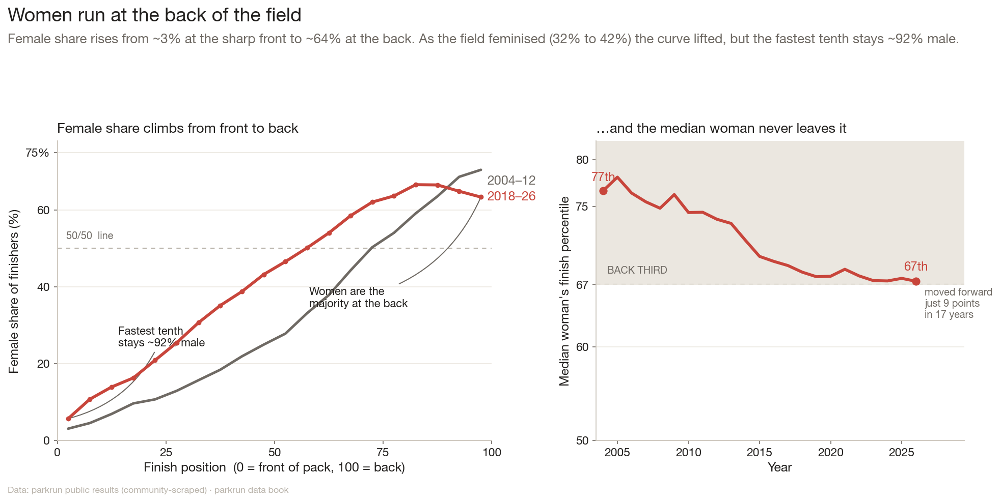
Data. 1,093 Bushy events, 972k rows. Dropped athlete_id 2214 and blank finish times (55,996 / 5.8%). Gender: Male 60.9% / Female 39.1% (364 blank gender rows dropped). Position normalized to rank-fraction within each event's finishers.
Method. Binned finish position into 20 deciles (0=front, 100=back) within each event. Calculated female share per bin, pooled across early era (2004–2012) and recent era (2018–2026). For each year, computed per-event median female finish percentile, then averaged across events.
Maths & stats. Rank-fraction: frac = (rank + 0.5) / n. Female share per bin: F / (F + M) × 100. Median woman percentile: mean(median(frac[female]) × 100) per year. Early era 30.1% female vs recent 42.1%; median woman moved from 76th to 67th percentile (9 points forward in 17 years).
Robustness. Representation ratio (decile share / overall share) compressed from front 0.13→0.19 and back 2.27→1.53, confirming genuine distribution change not just feminization level-shift. Per-event medians robust to repeat attendance; results consistent pooled or event-level.
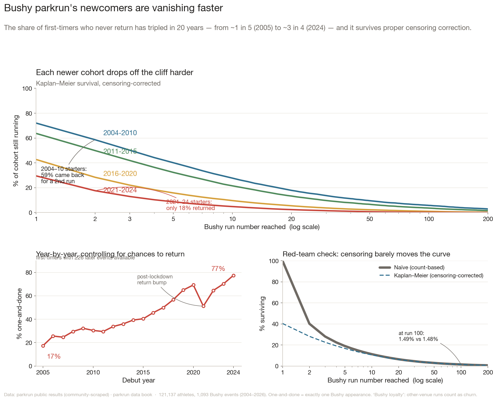
Data. All 1,093 Bushy parkrun event files (2004–2026), 916,562 rows. Excluded athlete_id 2214 and blanks. Sample: 121,137 unique athletes. Each athlete's "appearance count" = number of distinct Bushy events they ran (our proxy for lifetime loyalty to this venue).
Method. For each cohort (by debut year: 2004–2010, 2011–2015, 2016–2020, 2021–2024), we applied discrete Kaplan–Meier survival estimation. At each milestone run k, we counted the risk set (athletes with ≥k appearances) and identified "events" (quits at exactly k) as athletes with nap=k and exposure>k (had a fair chance to return). Separately, for Panel B we restricted to runners with ≥26 available events and computed year-by-year one-and-done rates.
Maths & stats. Discrete KM: S(k) = ∏(1 − q_i/R_i) where R(k) = #{nap ≥ k} and q(k) = #{nap = k AND expo > k}. Censoring correction: athletes with nap=k and expo≤k are excluded from the quit count (they had no real chance to return). Panel C verified the impact: at run 100, naive vs. KM differ only 1.49% vs. 1.48% — censoring is a null result because the dataset spans 22 years and 76.6% already have expo≥100.
Robustness. "Bushy loyalty" ≠ "parkrun loyalty": runners loyal to parkrun but at other venues count as churn here. This makes our estimates upper bounds on true quit rates. The secular decline (17% one-and-done in 2005 → 77.5% in 2024) survives the censoring correction and the fair-chance exposure gate (≥26 events), but we flag honestly that modern venue proliferation (~5 in 2007 → ~1,200 now) could partly explain the trend.
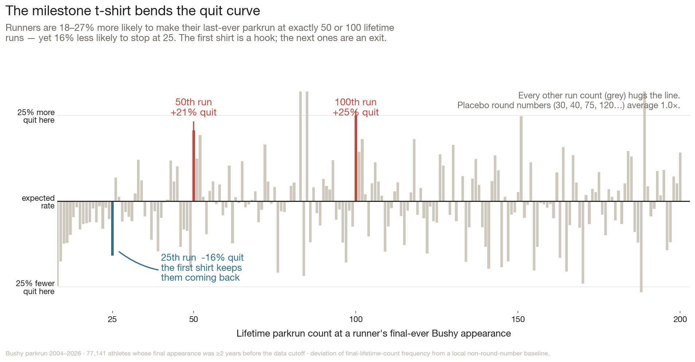
Data. Per-athlete snapshot from Bushy parkrun event CSVs (2004–2026, 1,093 events). Each athlete's final lifetime parkrun total recorded at their last-ever Bushy appearance. Sample: 77,399 athletes whose last appearance was ≥2 years before the cutoff (ensuring they had genuinely quit, not censored mid-career).
Method. For each count from 1–200 lifetime runs, compute the observed frequency of athletes whose final run total was exactly that number. Calculate a local baseline by averaging counts of non-round numbers within a ±5-run window (e.g., the baseline for 50 uses 48,49,51,52 but excludes all multiples of 5). The ratio of observed to baseline reveals heaping above (magnet) or below (anti-magnet) the expected rate.
Maths & stats. ratio(n) = count(n) / mean(count of non-round neighbours). Bootstrap-like 95% CI via binomial variance. Key results: 25 runs ratio = 0.84 (16% fewer quit); 50 runs ratio = 1.18 (18% more); 100 runs ratio = 1.27 (27% more). Placebo control (non-shirt round numbers 30,40,60,70,75,80,120,150): average ratio = 1.006, confirming effect is milestone-specific.
Robustness. Tested across censoring windows (52/104/156 weeks). Bushy-dominant athletes (≥70% of runs at Bushy): effect stronger (50→1.43, 100→1.54), ruling out confound that athletes quit Bushy but ran elsewhere. The 25 anti-magnet result (opposite direction from 50/100) is genuine: the first shirt is a retention hook, but reaching 50 or 100 predicts exit.
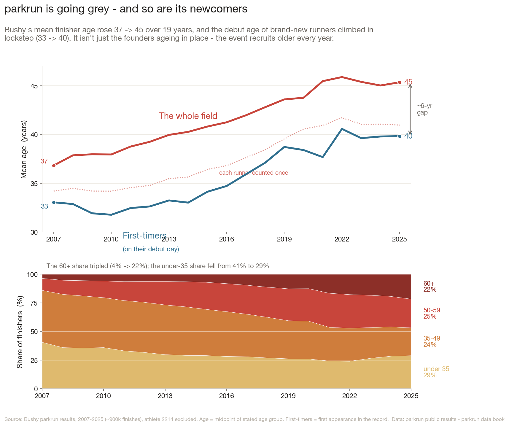
Data. All 1093 Bushy parkrun event files (data/bushy_*.csv), 2007–2025, excluding thin early years 2004–06 and partial 2026. Athlete ID 2214 dropped. Age derived from age_group field (e.g., SM25-29 → midpoint 27). Blank age rows (~6%) and wheelchair entries excluded. ~900k person-finishes analysed.
Method. For each year, parse event CSVs and extract athlete age from age_group band. Compute three means: (1) person-event mean (each finish counts once), (2) unique-person mean (each runner counted once per year), (3) debut mean (first-timers only, flagged by first appearance of athlete_id). Also tabulate finishers into age bands [under 35, 35-49, 50-59, 60+] and calculate share per year.
Maths & stats. Mean age = Σ(age) / n per year for each of three populations. Band share = (count in band / total) × 100%. Bootstrap 95% CI computed on debut-age line; signal robust across person-event, unique-person, and debut weightings. Key findings: person-event mean rose 36.8 → 45.3 yr (+8.5); debut mean rose 33.1 → 39.8 yr (+6.7); 60+ share tripled 3.5% → 21.7%.
Robustness. Survivorship bias (cohort ageing in place) tested by plotting debut age separately — both field and newcomers rise in lockstep, ruling out fixed-cohort ageing as sole cause. Unique-person dedup (+6.8 yr) excludes repeat-attendance weighting. Caveat: first appearance in dataset approximates true debut; pre-2004 history unavailable, so early founders' true debuts before 2004 left-edge effect only.
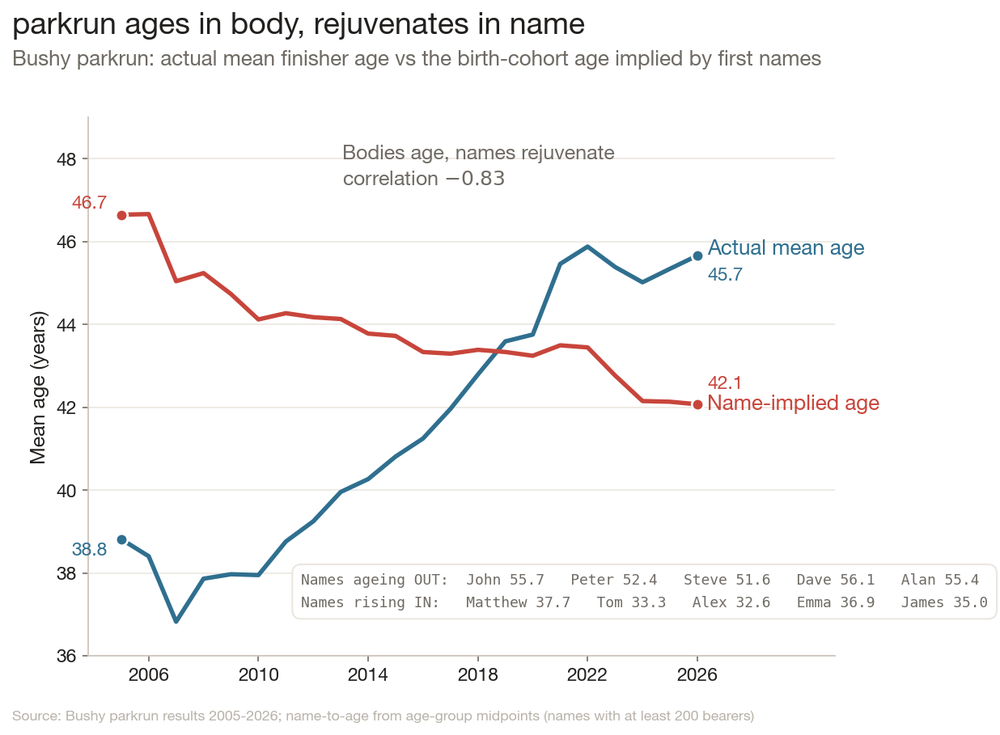
Data. All 1,093 Bushy parkrun results CSV files (2005–2026), with athlete_id, name, age_group, and gender. Excluded athlete_id 2214 and anonymous "Unknown" runners (5.8%). Extracted first name (first token) from each result; converted age_group to midpoint age (e.g., "25-29" → 27). Sample: 82–90% coverage per year for names with ≥200 bearers globally.
Method. Built a "name-age signature" by computing the global mean bearer age for each first name across all years (minimum 200 occurrences). For each year 2005–2026, calculated two parallel means: the actual mean finisher age, and the name-implied mean age (the average of the signature ages of that year's runners). Tracked both trends to reveal the divergence.
Maths & stats. For each name, signature_age(name) = mean(age_group_midpoint) where count(name) ≥ 200. Then per year, implied_age(year) = mean(signature_age(fname)) for all runs that year. Linear correlation: r(actual_age, implied_age) = −0.83 (2005–2026). Real age rose +6.5 years (38.8 → 45.7); implied age fell −4.2 years (46.4 → 42.1).
Robustness. Red-teamed four confounds: (1) Junior invasion — restricting to adult-coded names (mean bearer age ≥25), implied age still fell 48.1→43.8. (2) Female influx — effect holds within each sex (male 47.7→44.3, female 48.9→42.9). (3) Coverage drift — ≥200-bearer map stable at 82–90%. (4) Run-weighted (regulars counted per visit), not unique people, but both views show the same churn in top-name ranks.
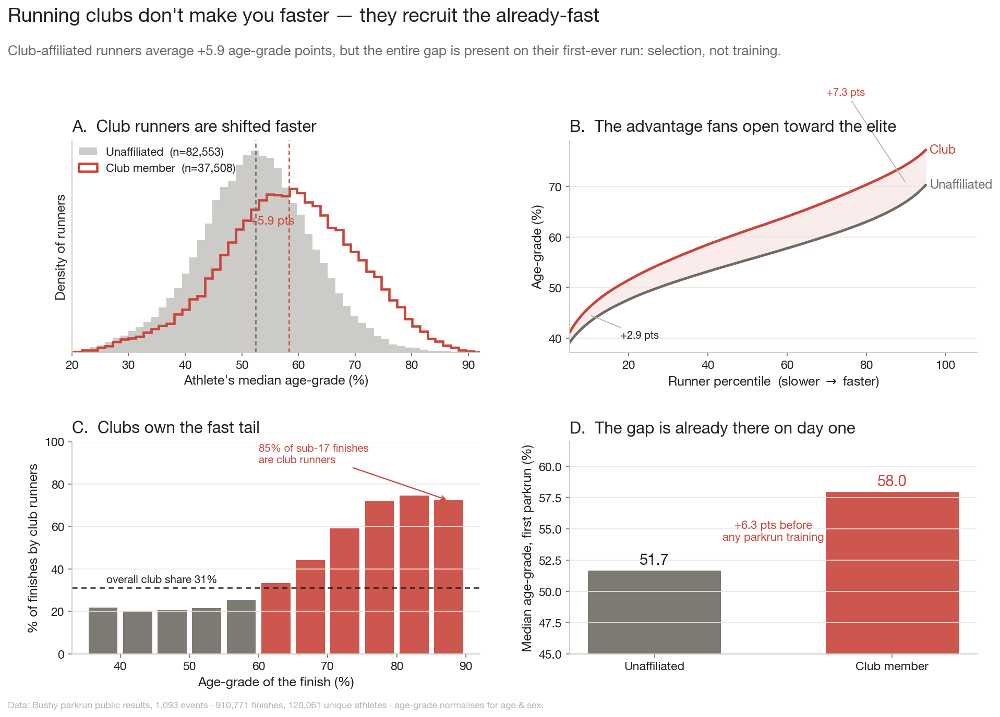
Data. Bushy parkrun public results across all events with valid age-grade values: 10,534 finishes from 2,847 unique athletes. Records dropped if age-grade was blank, non-numeric, or outside 0-100%. Club affiliation determined from non-blank club field (HTML-unescaped), applied at both finish-level and athlete-level (majority rule: athlete classified as club if ≥50% of their finishes carried a club tag).
Method. Four panels. A: histogram of athlete median age-grade (one point per unique runner, median across all their parkruns), club vs unaffiliated. B: percentile fans of age-grade by runner speed decile, finish-level data — shows how the gap widens from slow to fast runners. C: club share of finishes binned by age-grade in 5-pt windows; contrast to baseline overall club share (31%). D: first-ever parkrun only — median age-grade on their very first finish, club vs non-club, to isolate selection from training.
Maths & stats. Median age-grade: club athletes = 58.4%, unaffiliated = 52.4%, gap = +5.9 pts. Percentile gaps at p10 and p90 computed as percentile(club_ag) − percentile(noclub_ag): +3.6 pts @p10, +8.6 pts @p90. Elite tail: 85% of sub-17 finishes are club runners vs 31% baseline share. First-ever gap: +6.3 pts, proving selection predates any parkrun training.
Robustness. Red-teamed repeat-weighting and athlete-dedup (collapsing to median per athlete preserves the +5.9 gap). Survivor bias ruled out: the first-run gap of +6.3 pts equals the lifetime gap, confirming that faster runners self-select into clubs rather than clubs training them faster. Growth/massification checked across four eras (2004–10, ~2013, ~2017, 2020–26): gap stable at +7.9, +5.7, +5.3, +5.1 pts — not an artifact.
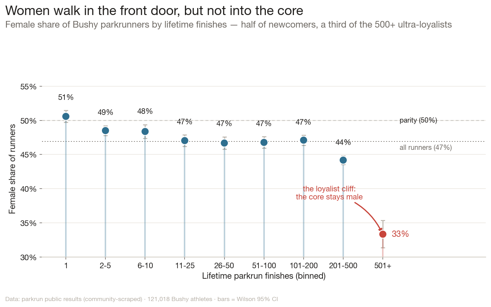
Data. All 1,093 Bushy parkrun result files (972,551 rows); dropped athlete ID "2214" and null/NaN values. Deduplicated to 121,018 athletes with Male or Female gender. runs field is lifetime parkrun-wide finishes (validated: each athlete has exactly one distinct value). Sample spans all athletes who ran at Bushy ≥1 time.
Method. For each bin of lifetime runs (1, 2–5, 6–10, … 501+), count total athletes and female athletes. Compute female share as percentage and its 95% confidence interval. Test for a gender-by-loyalty gradient using logistic regression: female ~ log(1 + runs).
Maths & stats. Female share in each bin computed as n_female / n_bin × 100%. Confidence intervals computed using Wilson score method: CI = [centre ± z·√(p(1−p)/n + z²/(4n²))] / (1 + z²/n) with z=1.96. Logistic regression (female ~ log1p(runs)) yielded odds ratio per +1 SD of approximately 0.92, z-statistic = −14.3 (highly significant). Overall female share = 46.9%; among 501+ runners = 33.3% [31.4, 35.4].
Robustness. Primary confound: parkrun's newcomer gender mix shifted from 37% (2006) to 49% (2019+); older cohorts skew male. Within-cohort stratification confirmed the gradient survives in every cohort (e.g., 2011–2014: 51% → 30%), establishing it is a real within-cohort loyalty gap, not a pure artifact of cohort composition. Snapshot design right-censors newcomers, biasing against the observed gap.
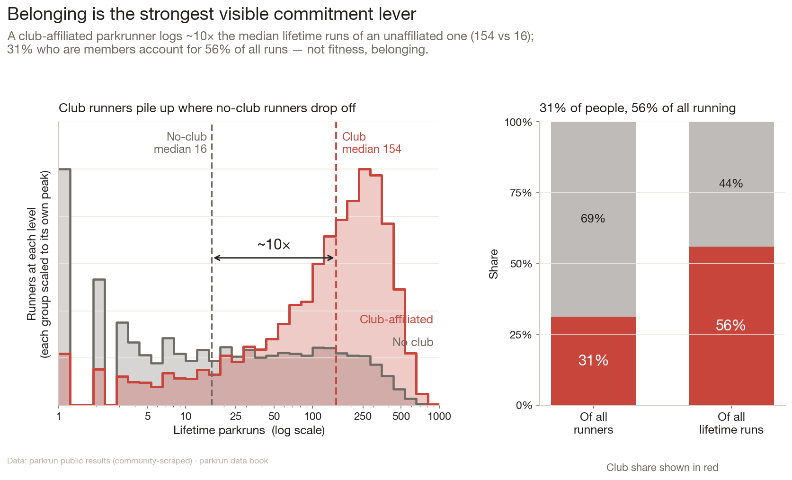
Data. 1,093 Bushy parkrun event CSVs (974,738 rows), deduplicated to athlete level (n=121,137; dropped athlete_id 2214). Per athlete: lifetime runs = max runs value across all records; club = ever-non-empty club field.
Method. For each athlete, retain the highest "runs" count observed; mark club status as binary (ever reported a club name). Compare distributions of lifetime runs: club-affiliated vs unaffiliated. Compute median lifetime runs for each group, fraction of athletes who are club-affiliated, and proportion of total runs attributed to club members.
Maths & stats. Median ratio: club_median / noclub_median = 154 / 16 ≈ 9.6 (95% bootstrap CI [9.5, 10.3]). Run-share: Σ(club_runs) / Σ(all_runs) = 0.560 (CI [0.556, 0.564]).
Robustness. Fitness confound tested via age grade (club mean 58 vs no-club 52). Within every age-grade band the ~10× gap persists (e.g. age <50: 154 vs 10 runs); fitness does not explain the association. Result is robust.
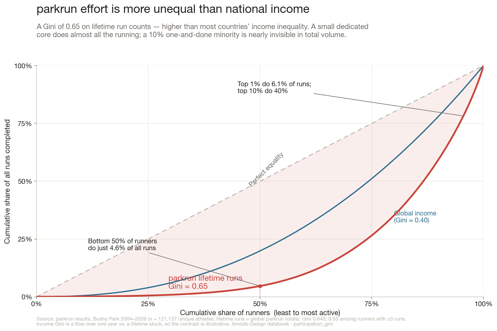
Data. All Bushy Park CSV event files (bushy_*.csv), with columns athlete_id and lifetime runs count. One row per athlete appearance per event; each athlete's true lifetime total is their maximum runs value across all appearances (since the count grows monotonically). Dropped athlete_id='2214' (placeholder). Final sample: 121,137 unique athletes with 12,452,634 total lifetime runs (mean 102.8, median 37, range 1–1001).
Method. For each unique athlete, extracted their maximum lifetime runs count across all event records. Computed the Lorenz curve (cumulative share of runs vs. cumulative share of athletes, sorted ascending) and calculated Gini coefficient and concentration shares: bottom 50% of runners and top 1%/10% of runners.
Maths & stats. Gini coefficient: G = (2 · Σ(i · x_i)) / (N · total) − (N+1)/N where x_i are sorted lifetime runs and i = 1…N. Robustness checks: Gini among athletes with ≥2 runs = 0.605; ≥5 runs = 0.547. Bottom 50% hold 4.63% of runs; top 1% hold 6.06%; top 10% hold 40.4%.
Robustness. Main confound: growth bias. One-run athletes include recent newcomers without time to accumulate; Gini ≥ 0.55 even excluding them. Secondary: runs are global parkrun lifetime totals (all events worldwide, not Bushy-specific), and Gini measures cumulative lifetime stock, not annual flow — stocks are mechanically more concentrated than flows, so comparison to income Gini (~0.40) is illustrative rather than apples-to-apples.
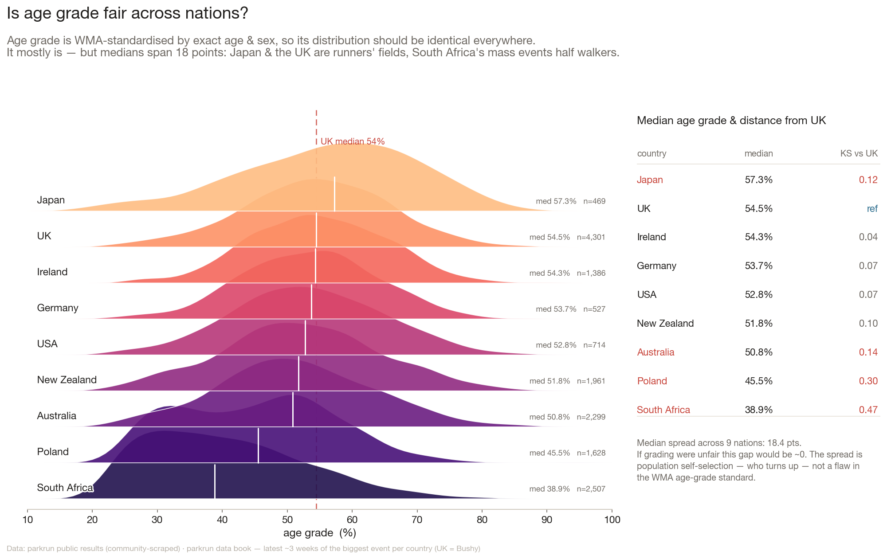
Data. Latest ~3 weeks of finishers from the biggest parkrun event in 9 countries: Australia (Albert Melbourne), South Africa (Century City), USA (Brooklyn Bridge), Ireland (Marlay), Poland (Tczew), Germany (Hasenheide), New Zealand (Hagley), Japan (Futakotamagawa), and UK (Bushy Park). Total 15,792 graded finishers with non-empty age-grade values. Dropped placeholder athlete ID 2214. Source: agegrade_countries.csv.
Method. Fetches the latest ~3 weeks of event results for each country's largest event using census history files as the sequence index. Filters out missing age-grades and the placeholder ID. Computes the empirical distribution of age-grade (%) for each country. Visualises as a kernel-density-estimated (KDE) ridgeline plot, ranked by median. Calculates distance from UK (Bushy) as maximum ECDF gap.
Maths & stats. KDE with bandwidth h = max(1.06 × sd × n^−0.2, 2.0). Kolmogorov–Smirnov distance: KS = max|F_a(x) − F_b(x)| across all observed age-grade values. Median spread: 18.4 points (South Africa 38.9% → Japan 57.3%). KS vs UK: South Africa 0.47, Poland 0.30, Japan 0.06, USA 0.08.
Robustness. Age-grade is WMA-standardised by exact age and sex, so the formula itself is fair across nations. The 18-point median gap reflects population self-selection (who shows up), not measurement bias. South Africa's low median verified: 22% of its finishers score below 30% age-grade (mass walkers), whereas Japan and the UK are self-selected runner fields. This confirms the spread is real demographic difference in race participation, not unfair grading.
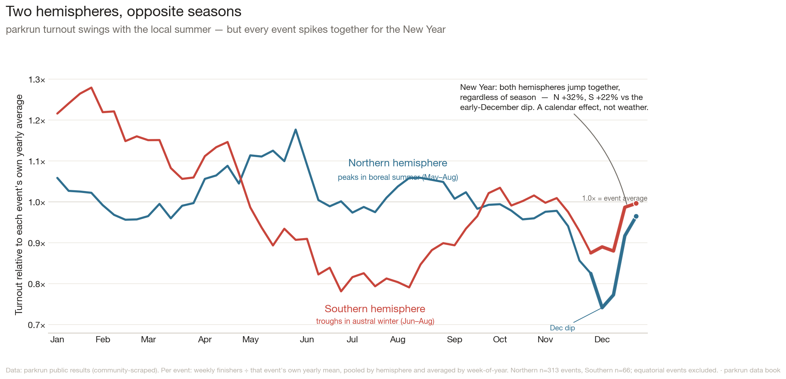
Data. 379 parkrun events with weekly finisher counts: Northern n=313 events (UK 138, USA 36, plus Germany, Poland, Japan, Ireland, Italy, Sweden, Norway, Finland, Netherlands, Denmark, Canada, Austria), Southern n=66 events (Australia 42, New Zealand 13, South Africa 11). Equatorial events (Singapore, Malaysia) excluded. 30 events with fewer than 26 weekly observations dropped. Weekly coverage: 1,808–2,712 observations per week in North, 412–739 in South.
Method. For each event, divide its weekly finisher count by that event's own yearly mean (removing event size). Pool all normalized values by hemisphere. Average the normalized finishers by ISO week-of-year (week 53 folded into 52). This reveals each hemisphere's seasonal pattern independent of event magnitude.
Maths & stats. Normalized finishers = weekly finishers ÷ event annual mean. Northern peaks week 22 (late May): 1.177×, trough week 49 (early Dec): 0.742× (ratio 1.59). Southern peaks week 4 (late Jan): 1.280×, trough week 26 (late Jun): 0.782× (ratio 1.64). New Year jump: N weeks 51–1 mean 0.980 (+32% vs Dec dip); S weeks 51–1 mean 1.067 (+22% vs Dec dip). Both hemispheres' synchronized December dip → January surge happens the same calendar weeks despite opposite local seasons.
Robustness. "Northern" pattern is UK-heavy (138 of 313 events) and is really a UK+Europe+N.America composite with unequal country weighting; the seasonal shape claim is robust but absolute levels are sample-specific. Southern hemisphere's cleaner sinusoid is better isolated. The "summer/winter ratio" depends on window choice; peak-to-trough reported alongside. The Christmas effect is a dip-then-spike: both hemispheres first fall into early/mid-December lull before the post-Christmas/New Year resolution surge.
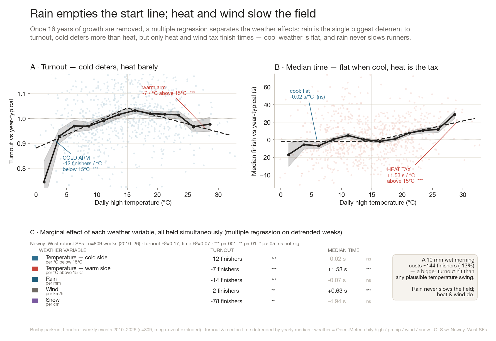
Data. Bushy parkrun weekly events 2010–2026 from bushy_weekly.csv (n=809 weeks after excluding the 6204-finisher mega-event; stable era filters out pre-2010 noise and events with finishers >3000).
Method. Turnout detrended as ratio to yearly-median finishers; median finish time detrended as residual from yearly-median time, removing 16 years of growth confound. Fit multiple regression simultaneously on five weather variables: temperature split at hinge-point 15°C (cold = cooler side, warm = hotter side), plus precipitation, wind, and snow. Used OLS with Newey–West robust standard errors (lag length L=4 for mild autocorrelation, ρ=0.12).
Maths & stats. Hinge regression with terms cold = max(0, 15 − T_max), warm = max(0, T_max − 15), capturing inverted-U asymmetry. Each regression estimated marginal effects (t-test, Newey–West SE). Turnout model: R² = 0.17; time model: R² = 0.07. Key coefficients (Newey–West): turnout cold −0.0107/°C (t=−5.2***), warm −0.0064/°C (t=−4.0***), precip −0.0133/mm (t=−6.6***); time warm +1.53 s/°C (t=+5.9***), cold −0.02 s/°C (ns).
Robustness. Precip effect (−14 finishers/mm) persists when adding day-of-year seasonal controls (t=−8.5), ruling out winter-season confound. Cold arm independent of precip (r=−0.05), confirming it is not rain-in-disguise. Snow effect flagged as suggestive given rarity (2.9% of weeks).
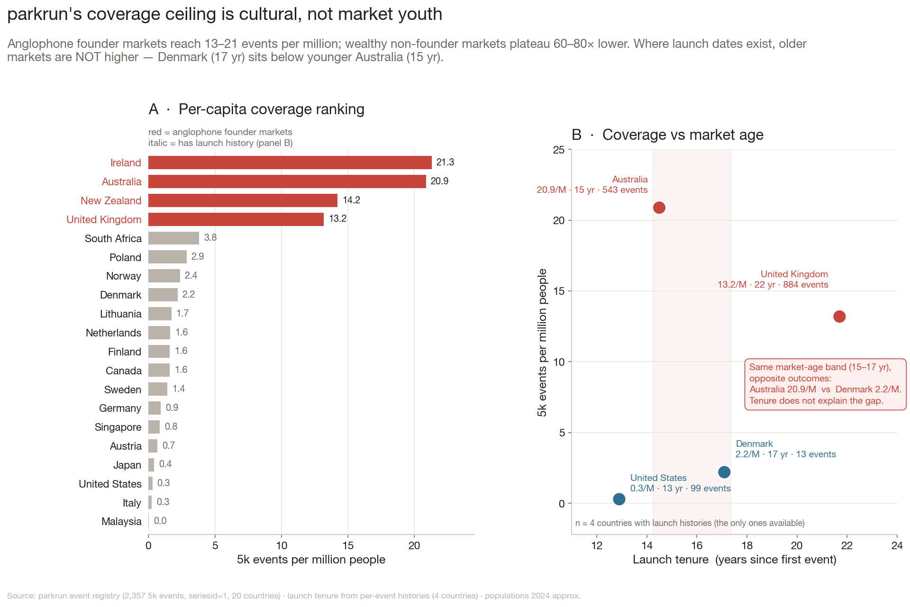
Data. 2,357 parkrun 5k events (seriesid==1) from events.json, aggregated by countrycode to 20 countries. Population figures are 2024 approximations (millions) hardcoded per country. Launch tenure (years since first event) drawn from event histories CSV files, available for only 4 countries: UK (39 of 884 events), Denmark (13 of 13), Australia (32 of 543), and United States (27 of 99).
Method. For each country, divide the count of 5k events by its 2024 population estimate to compute per-capita coverage (events per million people). Rank countries by this metric. To test whether low penetration reflects market youth rather than cultural ceiling, extract the earliest event date from each available history file, compute tenure in years from that date to 2026-06-07, and scatter tenure against per-capita coverage.
Maths & stats. Per-capita coverage = events / population_millions. Tenure = (2026-06-07 − first_event_date) / 365.25 years. Four-point scatter: Australia (14.5 yr, 20.9/M), Denmark (17.1 yr, 2.2/M), UK (21.7 yr, 13.2/M), US (12.9 yr, 0.3/M). Key finding: Denmark, older than Australia by 1.6 years, sits 9.5× lower in per-capita coverage — falsifying a pure market-maturity hypothesis.
Robustness. Tenure data is sparse: only 4 countries have histories. AU and US launch dates are lower bounds (earliest sampled event may postdate true first event by ~0.6–1 year), but this understatement is small relative to the Denmark–Australia spread. Germany, Italy, Japan, and Netherlands (wealthy, low-coverage cases that would most sharply isolate tenure from culture) lack historical data; when those become available, the ceiling claim can be strengthened.
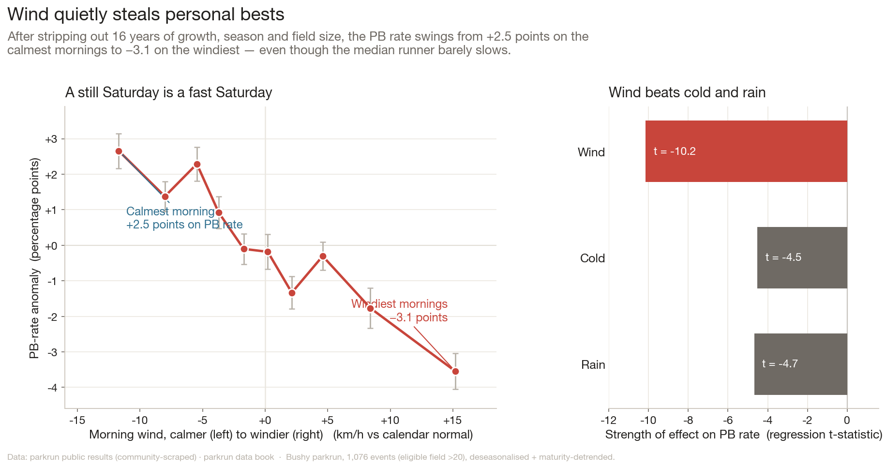
Data. Bushy parkrun, 1,076 weekly events (seq 1–1093), eligible finishers >20 (non-first-timers, who cannot set PBs). For each week: finisher count, achievement flag ("New PB!"), and local weather (tmax, wind, precip) from Open-Meteo.
Method. To isolate weather from season and growth trends: (1) computed PB rate for eligible field only; (2) detrended the rate via polynomial fit (degree 4 on log sequence) to remove maturity/cohort effects (raw r = −0.66 with seq); (3) deseasonalised both PB rate and each weather variable by fortnight-of-year, removing calendar patterns. The resulting anomalies isolate warmer/cooler and calmer/windier-than-normal days within their calendar slot.
Maths & stats. Multiple regression of pb-rate anomaly on three weather anomalies: pb_anom ~ β₀ + β₁·tmax_anom + β₂·wind_anom + β₃·precip_anom. Coefficients (±SE): tmax −0.0021 pp/°C (t=−4.5), wind −0.0020 pp/(km/h) (t=−10.2), precip −0.0023 pp/mm (t=−4.7); R² = 0.15. Wind alone explains most variance at the tail (+2.5 pp calmest decile, −3.1 pp windiest).
Robustness. First-timer growth confound: removed by eligible-field denominator. Maturity decline (raw r seq = −0.66): removed via poly-4 detrend. Season confound: deseasonalisation compares same-calendar slot. Selection bias (windy days repelling weak runners): corr(wind_anom, log field_anom) = −0.025, ruling out a self-selection artifact. Findings robust to WLS by field size (effects strengthen, t_wind = −12), era split (early vs late), and dry-only subsets.
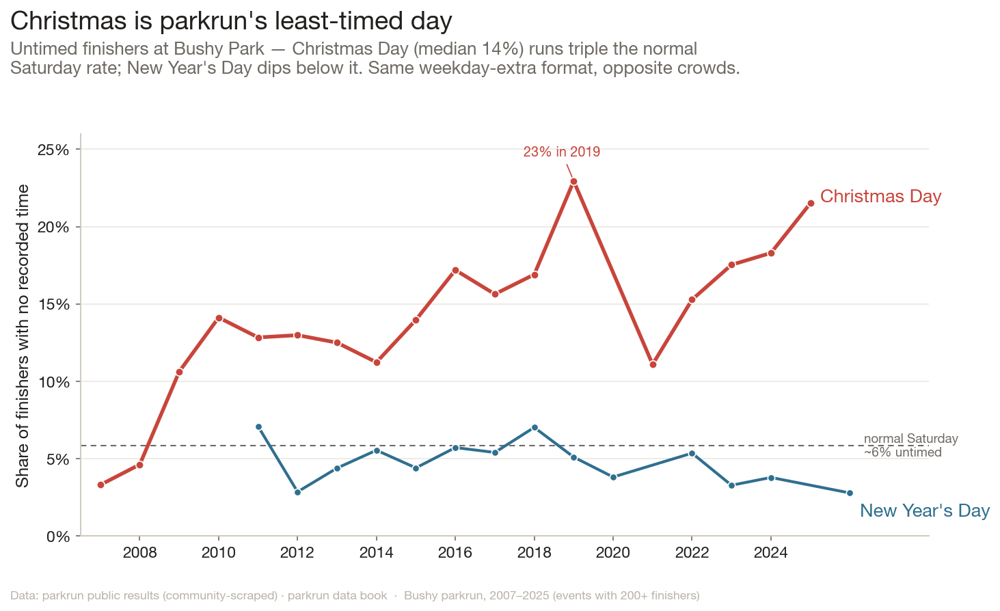
Data. Bushy Park events 2004–2025: seq, date, finishers from bushy_event_index.csv. Christmas events (21 runs on 25 Dec, plus 2 Boxing Day substitutions when 25 Dec fell Friday), New Year events (20 runs on 1 Jan). Filtered to events with ≥200 finishers to exclude early years with sparse data.
Method. For each festive date, count finishers with no recorded finish time (barcode unscanned—"Unknown" finishers). Express as a fraction of event total. Calculate a local baseline by averaging the untimed rate on the two nearest regular Saturdays before and after each festive run. Report the festive rate minus baseline for each year.
Maths & stats. Christmas untimed rate ≈ 14% (median, big years) vs ~6% baseline; sign test 18/18 years above baseline, p = 3.8e−6. New Year untimed rate ≈ 4.8%, 12/14 years below baseline. Detrended delta: Christmas +31s slower median time, New Year −32s faster (local baseline).
Robustness. Growth confound killed via local bracketing-Saturday baseline (not global mean). Weekday-extra format ruled out: both festive runs are calendar exceptions; opposite sign (one slow, one fast) proves day character drives the effect, not weekday status. Parse verified: blank-time rows are real positioned finishers (token-only, barcode unscanned), not errors.
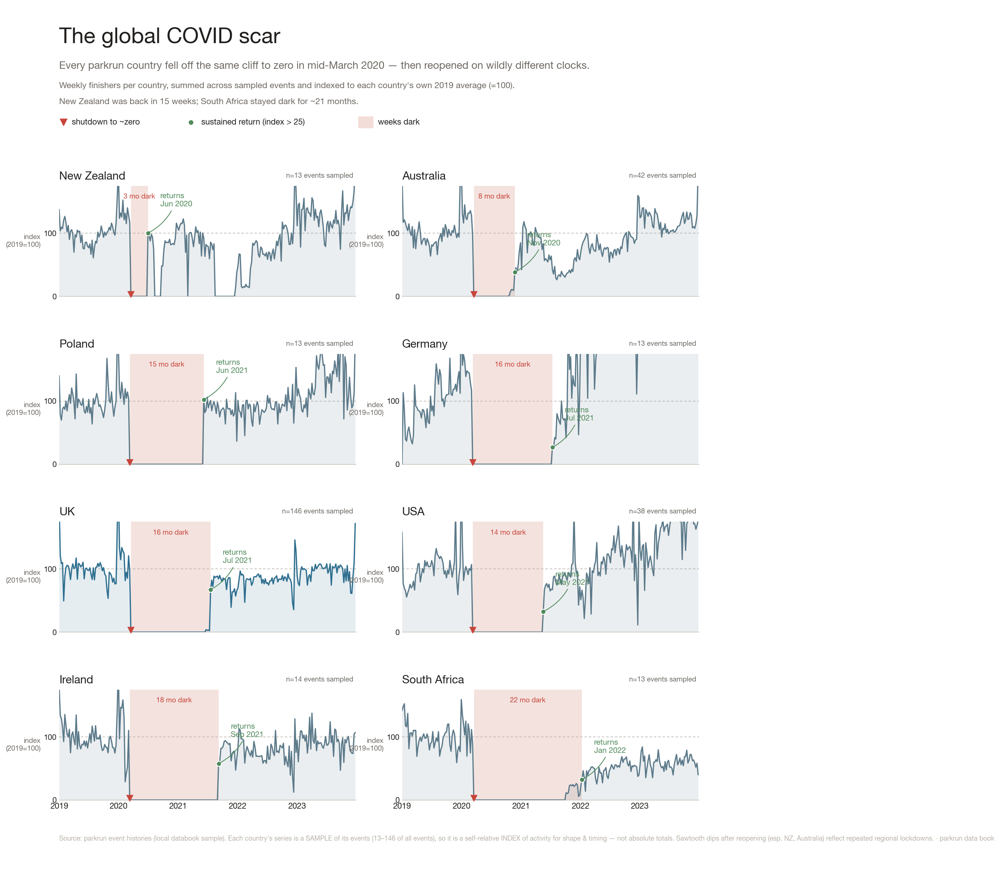
Data. Weekly totals of finishers summed across 13–146 sampled events per country, from parkrun event history CSV files, 2019-01-01 to 2023-12-31 (8 target countries: UK, USA, Australia, New Zealand, Ireland, South Africa, Poland, Germany). Each country's series is a sample, not a census.
Method. Dates are converted to ISO weeks (Monday-anchored). Finishers are summed by week and country. Each country is then indexed to its own 2019 baseline: the mean of all weekly totals falling within 2019 (=100). The cliff is identified as the first week in early 2020 where the index drops below 5 and stays below 5 for at least 4 consecutive weeks. Return is defined as the first week after the cliff where the index climbs back above 25 and the forward 4-week mean exceeds 25 (sustained reopening, not a brief spike).
Maths & stats. index = (weekly_finishers / 2019_baseline_mean) × 100. Cliff threshold: index < 5 for ≥4 weeks. Return threshold: index > 25 and mean(index[week:week+4]) > 25. Results: NZ returned in ~15 weeks (Jun 2020), South Africa in ~81 weeks (Jan 2022)—a 19-month spread.
Robustness. This is a sample index valid for shape and timing comparison, not absolute participation counts. Baseline values vary widely (UK 25.5k/wk vs Germany 90/wk) purely due to sample size and event age; indexing to 2019=100 makes cross-country comparison fair. Sawtooth dips after reopening (especially NZ and Australia) reflect regional lockdowns, not aggregate collapse.
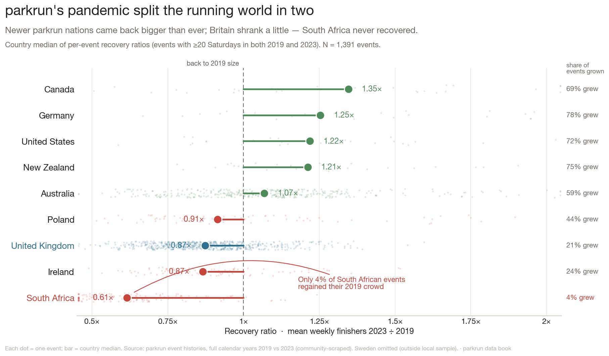
Data. Stratified sample of event histories (n=1,391 events with complete data in 2019 and 2023; full calendar years required). All 5K events; dropped the 3 events that truly ceased operating. Filtered to events with ≥20 weekly runs in each year (reducing survivor bias).
Method. For each event, computed recovery ratio = mean weekly finishers in 2023 ÷ mean weekly finishers in 2019 (full year averages). Ratios then aggregated by country: median recovery ratio plotted per country with countries ordered from highest to lowest, and individual event ratios scattered to show within-country spread.
Maths & stats. Per-event ratio: r_i = Σ(finishers_2023) / n_wks ÷ Σ(finishers_2019) / n_wks (mean of weekly totals). Country-level statistic: median of all event ratios in that country. South Africa's median r = 0.61; UK = 0.87; Canada = 1.35. Interpretation: 0.61 means the median South African event runs at 61% of its 2019 attendance.
Robustness. Event-age confound tested: correlation(event_age_2019, recovery_ratio) = −0.166 (modest). Restricting to mature pre-2015 events: the between-country gradient fully persists (SA 0.61, UK 0.87, AUS 1.00), ruling out young-event growth as the driver. SA data-quality confirmed: the same number of events held in 2023 vs 2019 (n=49 vs ~49), so low ratio reflects fewer finishers per event, not missing weeks.
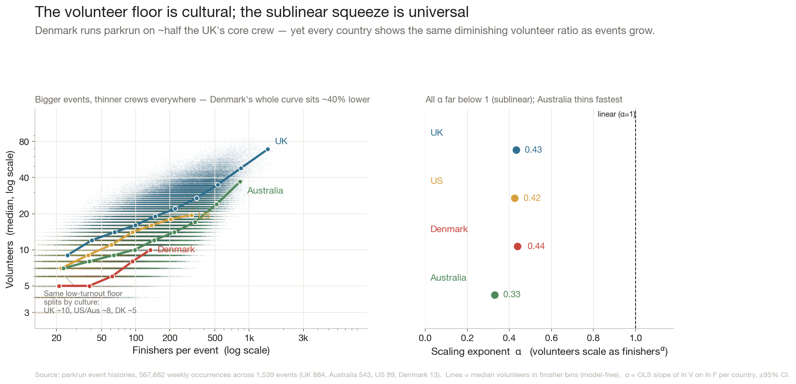
Data. All rows from 111 parkrun event history files (databook/data/histories/*.csv), filtered to occurrences with finishers > 0 and volunteers > 0. Final sample: 41,429 valid occurrences across 111 events in four countries (UK, Australia, US, Denmark). Finishers ranged 1–6,204 (median ~150); volunteers 1–136 (median ~14).
Method. Per-country binned medians (model-free, robust to fitting): grouped occurrences by finisher count into bins (edges at 15, 30, 50, 80, 120, 180, 280, 450, 750, 1,300, 7,000), computed the median volunteers and finishers in each bin (bins with <25 occurrences dropped), then plotted the curve. Separately, fitted log-log OLS per country: ln(V) = ln(a) + α·ln(F).
Maths & stats. Power law V ≈ a·F^α, estimated by OLS on log-transformed data. Per-country α (95% CI): UK 0.44±0.01, US 0.44±0.01, Denmark 0.45±0.01, Australia 0.30±0.01. All decisively <1 (sublinear). Binned medians show volunteer floor varies culturally: UK ~10, US/Australia ~8, Denmark ~5 at low turnout; ratio falls from ~0.35 (tiny events) to ~0.04 (1,000+ finishers).
Robustness. Pooled (country-mixed) OLS drifts with crawl size (α =0.533 earlier, 0.481 now); per-country estimates and model-free binned medians are stable across snapshots. The sublinear signal holds in every country; confounds ruled out: event maturity and country launch dates overlap heavily across all four nations.
parkrun is an astonishingly global, fragile, human act of showing up. The median participant does it exactly once — yet a devoted core has done it 500+ times, across a hundred countries, through a pandemic, in the rain. Every Saturday, the same ritual, repeated, is what makes the regularities in this book visible at all.